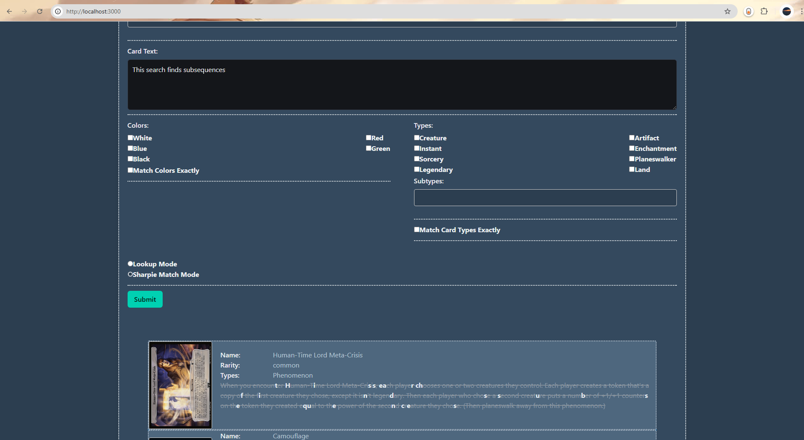

SharpiEvolve is a specialized search engine designed for Magic: The Gathering's "Sharpie Cube" format. This unique web application enables users to input custom text and find cards from the Magic: The Gathering database that can be modified using a Sharpie to match the input text. The project blends advanced text-matching algorithms, intuitive user interfaces, and scalable web technologies to deliver a seamless search experience for players of this niche format. SharpiEvolve represents a successful marriage of technical precision and creative problem-solving, delivering an innovative tool for Magic: The Gathering enthusiasts. SharpiEvolve utilizes Node, React, Bumla CSS, and SQLite.

HSUMap3d: Three Dimensional Navigation Application
As part of a collaborative team of four, I contributed to the development of HSUMap3D, a sophisticated navigation app commissioned by the Cal Poly Humboldt Library. This application features a user-friendly interface with a 3D projection of the library, allowing users to select their current location and desired destination within the library. Utilizing the A* algorithm, the app calculates the most efficient route and visually guides the user to their destination. The project was executed using Agile development methodology, ensuring iterative progress and continuous improvement throughout the development process.
Hummingbird Solar Solutions Workflow Automation Tool
Following a consultation with the founder of Hummingbird Solar Solutions, I was commissioned to develop a comprehensive tool suite to automate key aspects of their workflow. Hummingbird Solar Solutions, a solar panel sales company based in Southern California, needed a solution to streamline their business processes. The final tool suite included features for scraping online real estate sales repositories, collecting satellite images of addresses via the Google Maps API, identifying and filtering out properties with existing solar panels using image recognition, and generating a spreadsheet of potential leads. This spreadsheet, containing the names and addresses of homes without solar panels, enabled Hummingbird Solar Solutions to efficiently create targeted mailing lists for their marketing campaigns and cut the time required to get leads by more than 90%.
ToolRental: Blockchain Tool Renting Application
In a team of three, I helped develop ToolRental, a blockchain-based decentralized application designed to provide a lightweight tool rental service with minimal overhead. The Ethereum-based smart contract dynamically calculates a deposit from the renter based on confidence levels and records transactions between the renter, rentee, and the tool on the ToolRental ledger. This application allows users to list tools for rental or request available tools, supporting both physical tools and virtual product keys for digital productivity software. Our goal was to create a seamless and secure rental protocol that efficiently connects users with the tools they need.